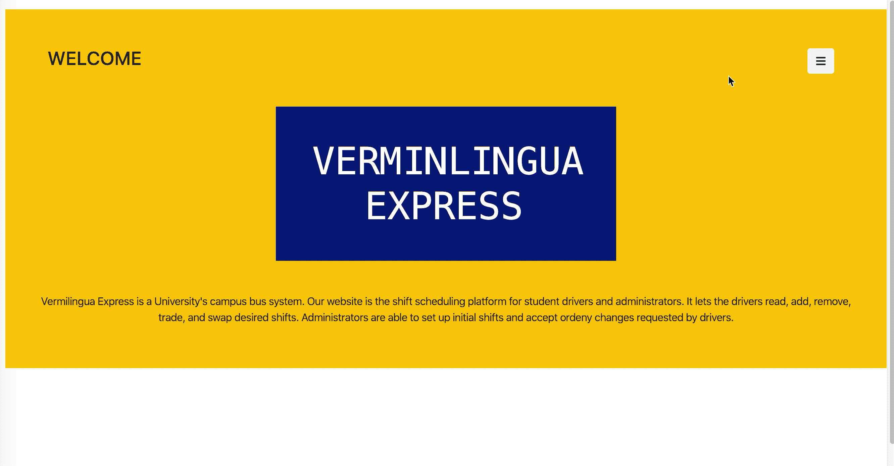

<div class="load-data">
    <div class="block-content">
        <div class="project-head">
            <h1 class="block-title text-center">Anteater Express</h1>
            <hr>
            <div class="tags"><span>Category : </span>Scheduling App</div>
            <p class="tags">Platform : Desktop / Mobile</p>
            <p class="app-links"><a target="_blank" href="https://www.shuttle.uci.edu/lfz-credit-page/">View Credits
                    Page</a></p>
            


            <p>
                <h4><strong>Role:</strong></h4>Full Stack Web Developer
            </p>
            <p class="project-description">
                <ul>
                    <h4><strong>App details</strong></h4>
                    <hr>
                    <li>Desktop and mobile <strong>responsive</strong>, two-Interface Shift-Scheduling-App for Campus
                        Bus Drivers and administrators.</li>
                    <li>Integrated <strong>ReactJS, JSX, PHP, Fetch, React Routing</strong> to give users functionality
                        to display, edit, and auto-populate <strong>(Algorithm)</strong> work-shifts. </li>
                    <li>Created <strong>design</strong> concepts and adjusted design elements to address <strong>user
                            interface (UI)</strong> and <strong>user experience (UX)</strong>, and technical concerns.
                    </li>
                    <li>Built <strong>database</strong> schema and constructed <strong>queries</strong> to store and
                        access data in a <strong>MySQL</strong> database.</li>
                    <li>Adopted <strong>Agile methodology</strong> with <strong>ideation</strong>,
                        <strong>stand-up</strong>, and <strong>sprints</strong> to achieve an <strong>MVP</strong>, add
                        features and fix bugs.</li>
                    <li><strong>Communicated</strong> progress to the team and project manager using
                        <strong>MeisterTask</strong> (task management).</li>
                    <li>Utilized the <strong>macOS Command line</strong> for version control and <strong>Docker</strong>
                        to contain libraries and dependencies.</li>
                    <li>Hosted via <strong>AWS</strong> EC2 instance on an <strong>Ubuntu</strong> server.</li>
                </ul>
            </p>
            <p>
                <h4><strong>Tools and Tech</strong></h4>
                <hr>
                HTML5, CSS3, Javascript, ReactJS, JSX, React Routing, PHP, MySQL, Query Optimization, Bootstrap,
                MeisterTask, Figma, Kanban, AWS, EC2, Ubuntu
            </p>

            <div class="project-nav text-center">
                <span class="float-left">
                    <a class="open-project" href="hacker'sShop.html">&leftarrow; Previous Project</a>
                </span>
                <span class="float-right">
                    <a class="open-project" href="ichattpro.html">Next Project &rightarrow; </a>
                </span>
            </div>
        </div>
        <div class="row text-center">
            <div class="col-md-12 text-center">
                <small>© 2019 Daniel Seong. All Rights Reserved.</small>
            </div>
        </div>

        <script>
            $('#close-project').on('click', function () {
                $('.content-blocks.pop').removeClass('showx');
                $('.inline-menu-container').addClass('showx');
                $('.content-blocks.pop section').empty();
            });
        </script>
    </div>